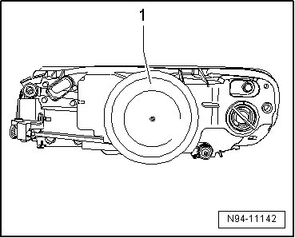
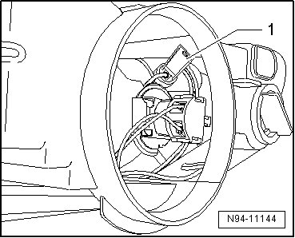
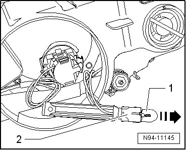

Parking Light Bulb: Service and Repair
Halogen Headlamps, from 12.06
Parking Lamp Bulb
• Left Parking Lamp (M1) and Right Parking Lamp (M3) can be checked via output Diagnostic Test Mode (DTM) of Vehicle Electrical System Control Module (J519) --> [ Vehicle Electrical System Output Diagnostic Test Mode ] Initial Inspection and Diagnostic Overview.
• Illustrations depict replacement of parking lamp at right headlamp.
• The same procedure is used to remove and install the left parking lamp (M1) and right parking lamp (M3).
Removing
- Switch off ignition, switch off all electrical consumers and remove ignition key.
- Remove headlamp --> [ Headlamps ]. Headlamps
- Remove the cap - 1 - from the rear side of the headlamp.

- Pull the grip piece with the bulb socket together with the parking lamp bulb - 1 - back out of the reflector. Be careful of the connected wires when doing so.

- Pull the parking lamp bulb - 1 - in - direction of the the arrow - out of the grip piece with bulb socket - 2 -.

Parking lamp bulb: 12V, 5 W
Installing
Install in reverse order of removal, noting the following:
CAUTION!
When installing cap, ensure proper seating. It is destroyed by ingress of water into headlamp.
• Do not touch the glass of the light bulb, when installing. Your fingers will leave traces of grease on the glass which, when the lamp is switched on, will evaporate and cloud the glass.
- Check headlamp for function.
- Check and adjust headlamp aim if necessary .